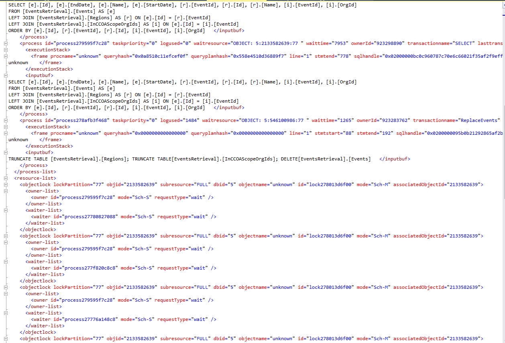

Database deadlocks causing exceptions
Overview
The most probable cause for DB deadlocks is the existing refresh mechanism for CXP updates.
Execution instructions
Check if there are deadlocks
- Check chggrd-api-sql-db-prod.database.windows.net with this query (requires JIT to FcmProduction):
- Query deadlocks for the last hour
- Don't forget to update the time range in the chart to include the range of interest.
If the graph shows deadlocks:
Connect to chggrd-api-sql-db-prod.database.windows.net server using SSMS.
- If SSMS not installed in your computer, see: SQL Server Management Studio (SSMS)
- Username and Password are available
from chggrd-api-kv-prod secrets (requires JIT
to FcmProduction), under:
- chggrd-db-admin-username
- chggrd-db-admin-password
Once logged into SSMS, connect to master database and open the query window.
Run the following query:
WITH CTE AS ( SELECT CAST(event_data AS XML) AS [target_data_XML] FROM sys.fn_xe_telemetry_blob_target_read_file('dl', null, null, null) ), DEADLOCKS AS( SELECT target_data_XML.value('(/event/@timestamp)[1]', 'DateTime2') AS Timestamp, target_data_XML.query('/event/data[@name=''xml_report'']/value/deadlock') AS deadlock_xml, target_data_XML.query('/event/data[@name=''database_name'']/value').value('(/value)[1]', 'nvarchar(100)') AS db_name FROM CTE ) SELECT [Timestamp], [deadlock_xml], [db_name] FROM DEADLOCKS WHERE [Timestamp] BETWEEN «DEADLOCK-START» AND «DEADLOCK-END»Note
Replace «DEADLOCK-START» and «DEADLOCK-END» with the corresponding UTC time values
Click deadlock_xml on to see the full content of the XML object.
- If you see something like the following image, the culprit is the CxpRetrieval process. 
- Use the instructions on Pause CXP Retrieval to the stop the deadlocks.